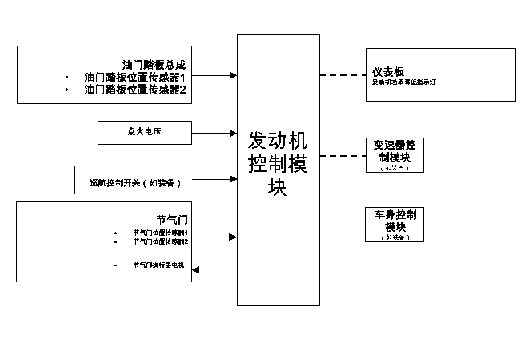

节气门执行器控制（TAC）系统的说明

发动机控制模块 (ECM) 是节气门执行器控制 (TAC) 系统的控制中心。发动机控制模块根据加速踏板位置传感器的输入确定驾驶员的意图，然后根据节气门位置传感器计算相应的节气门响应量。发动机控制模块通过向节气门执行器电机提供脉宽调制电压，实现节气门定位。节气门在两个方向都受弹簧负载，默认位置为微开。
工作模式
正常模式
在节气门执行器控制系统工作期间，有几种模式或功能被认为是正常的。在正常操作期间可进入以下几种模式：
•
加速踏板最小值 - 用钥匙起动时，发动机控制模块更新已读入的加速踏板最小值。
•
节气门位置最小值 - 用钥匙起动时，发动机控制模块更新已读入的节气门位置最小值。为了读入节气门位置最小值，将节气门移至关闭位置。
•
破冰模式 - 如果节气门叶片不能达到预定的最小节气门位置，则进入破冰模式。在破冰模式期间，发动机控制模块指令向关闭方向的节气门执行器电机施加几次最大的脉宽。
•
加速踏板最小值 - 用钥匙起动时，发动机控制模块更新已读入的加速踏板最小值。
•
蓄电池节电模式 - 在发动机无转速持续预定时间后，发动机控制模块指令蓄电池节电模式。在“蓄电池节电”模式期间，节气门执行器控制模块卸去电机控制电路上的电压，以消除用于保持怠速位置的电流，并使节气门返回至默认的弹簧负载位置。
降低发动机功率模式
发动机控制模块检测到节气门执行器控制系统故障时，发动机控制模块可进入降低发动机功率模式。降低发动机功率可能导致以下一种或多种情况：
•
限制加速-发动机控制模块将继续使用加速踏板控制节气门，但车辆加速受限制。
•
限制节气门模式 - 发动机控制模块将继续使用加速踏板控制节气门，但节气门最大开度受限制。
•
节气门默认模式 - 发动机控制模块将关闭节气门执行器电机，节气门将返回至弹簧负载的默认位置。
•
强制怠速模式 - 发动机控制模块将执行以下操作：
–
通过定位节气门位置将发动机转速限制在怠速，或者在节气门关闭时控制燃油和点火使发动机怠速。
–
忽略加速踏板的输入。
•
发动机关闭模式 - 发动机控制模块将关闭燃油并使节气门执行器断电。